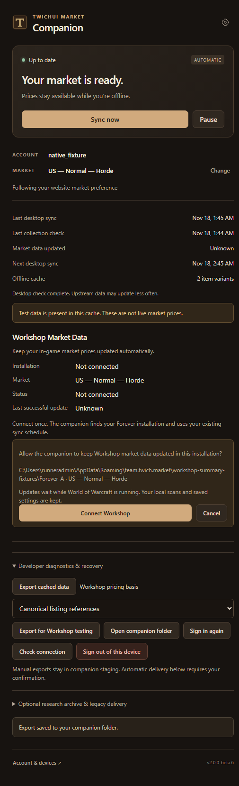
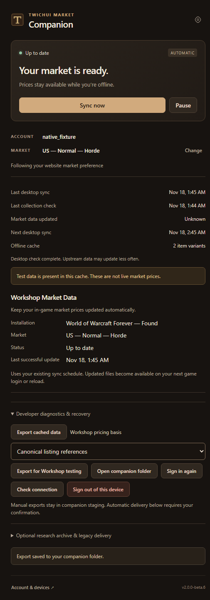
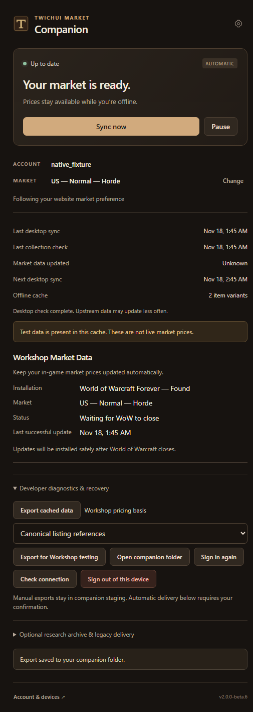

Review candidate only. No deployment, signing or addon publication. These screenshots do not prove Forever loaded a generation.
The first three scenes come from the actual installed Windows Companion at source 9a669b2, paired addon 1f437e3, GitHub run 44217044289. Its installed-release step passed; that run later failed the separate large-producer fixture ACL check. All markets and game installations here are explicit synthetic fixtures.
One native-owned installation permission after actual Windows folder selection. No item hashes, dates or archive download required.

Actual native scheduler retrieves and publishes summary data without a historical archive. File publication and game consumption are separate states.

A running fixture Wow.exe defers publication and preserves the previous valid generation.

Mocked-IPC browser mobile presentation. Layout/accessibility evidence only; this scene makes no native Windows or game claim.